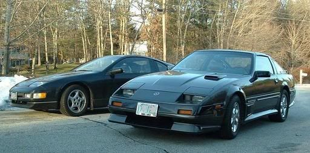

-
I have a 1987 300ZX with 269k miles and had the transmission rebuilt at a local specialty shop. Unfortunately, the transmission will not go into 1st or 2nd gear and it is back in the shop. They are trying to locate the needed parts. Do you know of any supplier who might carry them? -
Which transmission is it? If it's 87 turbo then it would be the 30A and if it's NA then the 71C. These are both Nissan gearboxes and you can get most of the OEM parts for those. When I had my 30A rebuilt I went through the parts catalog, put together a list of all required parts and ordered them from Japan through Amayama. In the US some aftermarket rebuild kits are also available, it depends on what parts are needed.-
 #2.1BSheehan commentedThanks for your input. I have the 87 base model with a 5 speed, so as per your message, I have the 71C gearbox?
#2.1BSheehan commentedThanks for your input. I have the 87 base model with a 5 speed, so as per your message, I have the 71C gearbox? -
FS5W71C to be more precise. It was quite widely used and rebuild kits are available. If you need more specific parts that are not in rebuild kits, it should still be possible to get either new parts from Nissan or used parts.
-
-
Always try e-bay before giving up. Worked wonders on refreshing my Z32 with NOS authentic Nissan parts NLA through normal channels. Some came from Japan. Below is an example for a manual transmission rebuild kit for a 87 Z31T manual.
https://www.ebay.com/b/Transmission-…103/bn_1457449Restore it, Don't crush it. They don't make them like this anymore.
Scott
85 Turbo, original owner, restored
93 NA Babied
Comment

Copyright © 2006–. All rights reserved. Privacy Policy
Comment